Огни судна служат не для того, чтобы видеть в темноте, а для того, чтобы быть видимыми. Они указывают направление движения и положение конкретного судна.
Эти огни помогают при навигации, поэтому их также называют навигационными огнями. Они должны либо иметь одобрение типа Федерального ведомства морского судоходства и гидрографии Германии (BSH), либо международно признанную сертификацию «Wheel‑mark», либо национальное разрешение других стран.
► Все огни должны использоваться в период между заходом и восходом солнца, а также при плохой видимости (туман, снегопад, сильный дождь).

► Круговой (Rundum) огонь светит по полному кругу в 360°.
► Передний (Topplicht) огонь освещает сектор горизонта 225°. По каждой стороне — от прямо по носу до 22,5° позади траверза.
► Кормовой огонь освещает оставшийся сектор позади судна — угол 135°.
► Бортовые огни (левый борт — красный, правый борт — зелёный) освещают по 112,5° каждый — от прямо по носу до 22,5° позади траверза. Вместе они покрывают тот же сектор, что и передний огонь.
В зоне действия Правил плавания по внутренним водным путям передний огонь должен быть установлен на той же высоте, что и бортовые огни, если бортовые огни установлены раздельно на корпусе судна.
На Рейне и Мозеле передний огонь — даже при раздельно установленных бортовых огнях — может быть установлен выше бортовых огней.
► Проблесковый огонь обычно представляет собой круговой огонь с частотой 40–60 вспышек в минуту.
Другие лампы или прожекторы на борту не должны использоваться так, чтобы их можно было спутать с этими огнями или чтобы они ослепляли других участников движения.
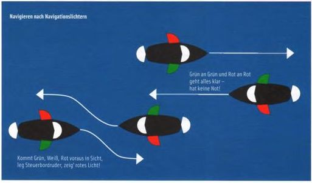

Гребная лодка: круговой фонарь (белый) Шлюпки должны включать круговой фонарь только при приближении к другому судну.

Парусное судно под парусами длиной менее 20 м, буксируемые или сцепленные малые суда — круговой огонь (белый). При приближении других судов показывается второй белый огонь (парусные суда под мотором считаются моторными судами).

или бортовые огни (красный, зелёный) могут быть объединены в двухцветный фонарь на или возле носа. Кормовой огонь — белый.

или трёхцветный фонарь (красный, зеленый, белый) на вершине мачты.

Моторное судно длиной до 20 м: передний огонь (белый) на той же высоте, что и бортовые огни, но минимум на 1 м впереди них. Бортовые огни (красный, зелёный) и кормовой огонь (белый).

или топовый огонь (белый) как минимум на 1 м выше бортовых огней. Бортовые огни (красный, зеленый) в двухцветном фонаре на носу или около носа. Кормовой огонь.

или Круговой огонь (белый) вместо переднего и кормового огня. Бортовые огни (красный, зелёный) в двухцветном фонаре на или возле носа.
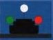
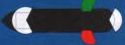
Судно длиной до 110 м: Топовый огонь (белый), бортовые огни (красный/зелёный), кормовой огонь.
Бортовые огни устанавливаются как минимум на 1 м ниже топового огня, обычно позади рулевой рубки.
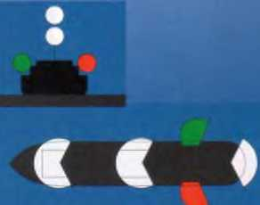
Судно длиной более 110 м: 2 топовых огня (белых), задний расположен выше переднего. Бортовые огни (красный/зелёный). Кормовой огонь (белый)
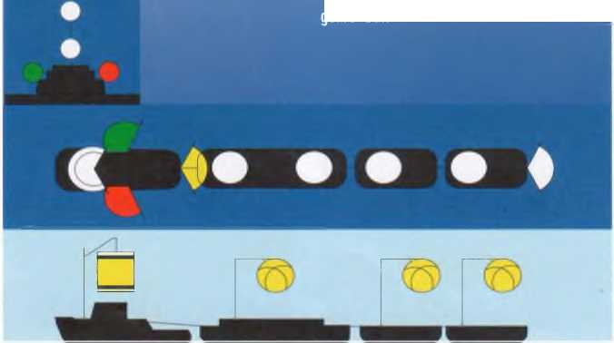
Буксирный состав
Буксир: 2 топовых огня (белых) вертикально один над другим
3 топовых огня (белых), , когда несколько буксиров буксируют конвой бок о бок.
Бортовые огни (красный/зелёный). Кормовой огонь (Желтый).
Каждое буксируемое судно:
Круговой огонь (белый), если длина более 110 м — второй круговой огонь сзади на той же высоте.
Последнее судно несёт кормовой огонь (белый).
Днём: у буксира жёлтый цилиндр с чёрно-белой полосой сверху и снизу.
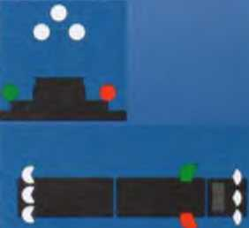
Буксируемый конвой
3 топовых огня (белых) на носовой части судна. Расположены в форме равностороннего треугольника.
Нижние расположены примерно на расстоянии 1,25 м друг от друга, верхний — примерно на 1,10 м выше.
На каждой барже, ширина которой видна спереди, устанавливается топовый огонь (белый).
Бортовые огни (красный/зелёный) и 3 кормовых огня (белые) на расстоянии 1,25 м друг от друга.
Для буксируемого состава: 3 кормовых огня жёлтых (вместо белых).
Суда с опасным грузом — включая танкеры, даже если они не загружены — ночью распознаются по одному, двум или трём синим круговым огням. Днём они несут соответственно один, два или три синих конуса вершиной вниз.
Специальные места стоянки для таких судов обозначаются синими табличками с белыми треугольниками или белыми ромбами, в которых изображены синие конусы.
От стоящих таких судов следует держать дистанцию 10, 50 или 100 м в зависимости от количества конусов.
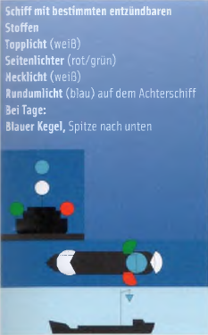
Судно с определёнными воспламеняющимися веществами
Топовый огонь (белый)
Бортовые огни (красный/зелёный)
Кормовой огонь (белый)
Круговой огонь (синий) на корме
Днём:
Синий конус вершиной вниз
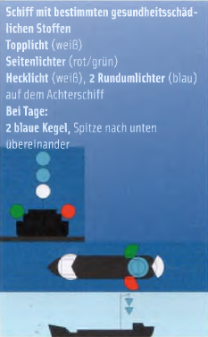
Судно с определёнными вредными для здоровья веществами
Топовый огонь (белый)
Бортовые огни (красный/зелёный)
Кормовой огонь (белый) и 2 синих круговых огня
Днём:
2 синих конуса вершиной вниз, расположенные один над другим
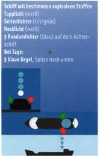
Судно с определёнными взрывчатыми веществами
Топовый огонь (белый)
Бортовые огни (красный/зелёный)
Кормовой огонь (белый) и 3 синих круговых огня
Днём:
3 синих конуса вершиной вниз, расположенные один над другим
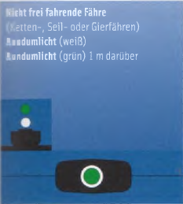
Паром, не движущийся свободно (кабельный, канатный или реактивный паром)
Круговой огонь (белый)
Круговой огонь (зелёный) 1м выше белого
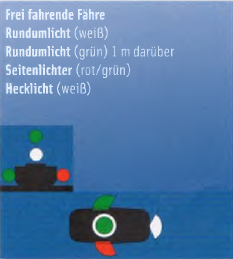
Паром, движущийся свободно
Круговой огонь (белый)
Круговой огонь (зеленый) 1м выше белого, бортовые огни (красный/зелёный) и кормовой огонь (белый)
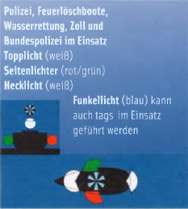
Полиция, пожарные суда, водно‑спасательные службы, таможня и федеральная полиция во время выполнения задач
Топовый огонь (белый)
Бортовые огни (красный/зелёный)
Кормовой огонь (белый)
Мигающий свет (синий) можно использовать и днем.